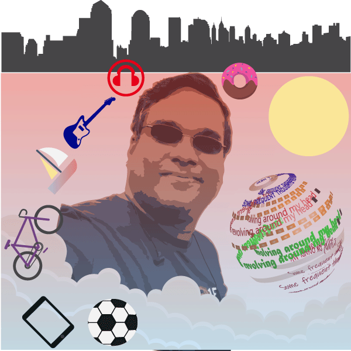
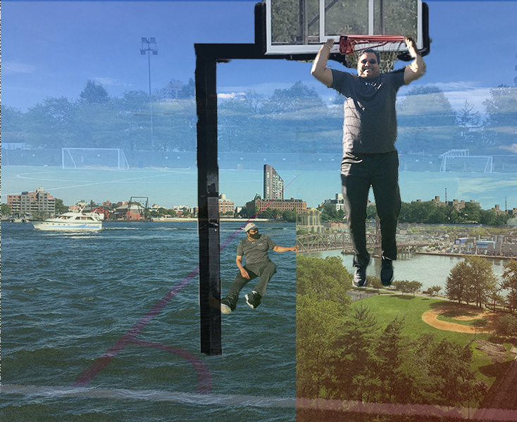

|  |
Vector ImageThis is an image I created with Adobe Illustrator. Saved in PNG format. It represents just a few of my favorite things revolving around my mind |
|  |
Raster ImageThis is an image I created with Adobe Photoshop. Saved in JPG format. It represents just a few of my constuctive distractions |
GIF AnimationThis is an image I created with Adobe Photoshop. Saved in GIF format. It represents an important social duty |
|
GIF AnimationThis is an image I created with Adobe Photoshop. Saved in GIF format. It represents just stopping for a moment to appreciate a sunset |
2020 © Copyright Chris Narine - All Rights Reserved